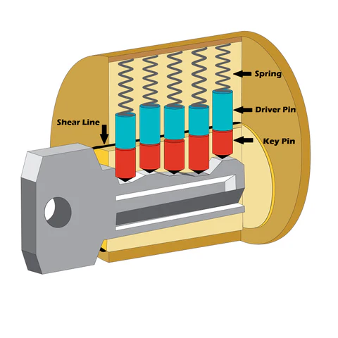

Lock-Picking as a Hobby
Lock-picking began as a practical skill for locksmiths, and still very much is today. But it has also evolved into a precision sport. It’s extremely fun to learn, satisfying if you're someone who loves a challenge, and best of all - It's actually extremely useful in real life.
What is Lock-Picking?
Lock-picking is the art of manipulating a lock’s internal components to open it without using the original key. It requires developing a feel for each individual pin and precisely manipulating small tools to set the pins at the shear line.
How Pin-and-Tumbler Locks Work
| Part | Function |
|---|---|
| Spring | Applies downward force to the driver pin |
| Driver Pin | Blocks the cylinder until lifted above the shear line |
| Key Pin | Rests directly on the key’s cuts; moves to shear line |
| Shear Line | The gap where the cylinder can rotate once pins are set |
Brief History
- 2000 BCE: Wooden pin locks in Ancient Egypt
- 1848: Linus Yale Jr. invents the modern cylinder lock
- 1990s: Lock-sport communities form online
As you can see, lock-picking as a hobby is a fairly recent development when you look at the history of locks.